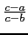
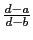

suivant: Division harmonique : harmonic_division
monter: La division harmonique, pôles
précédent: Point divisant un segment
Table des matières
Index
Le birapport de 4 points alignés : cross_ratio birapport
birapport a comme argument 4 nombres complexes a, b, c, d.
birapport renvoie le birapport deces 4 nombres à savoir :
/
On tape :
birapport(0,1,2,3)
On obtient :
4/3
On tape :
birapport(i,2+i,3/2+i,3+i)
On obtient :
-1
Documentation de giac écrite par Renée De Graeve